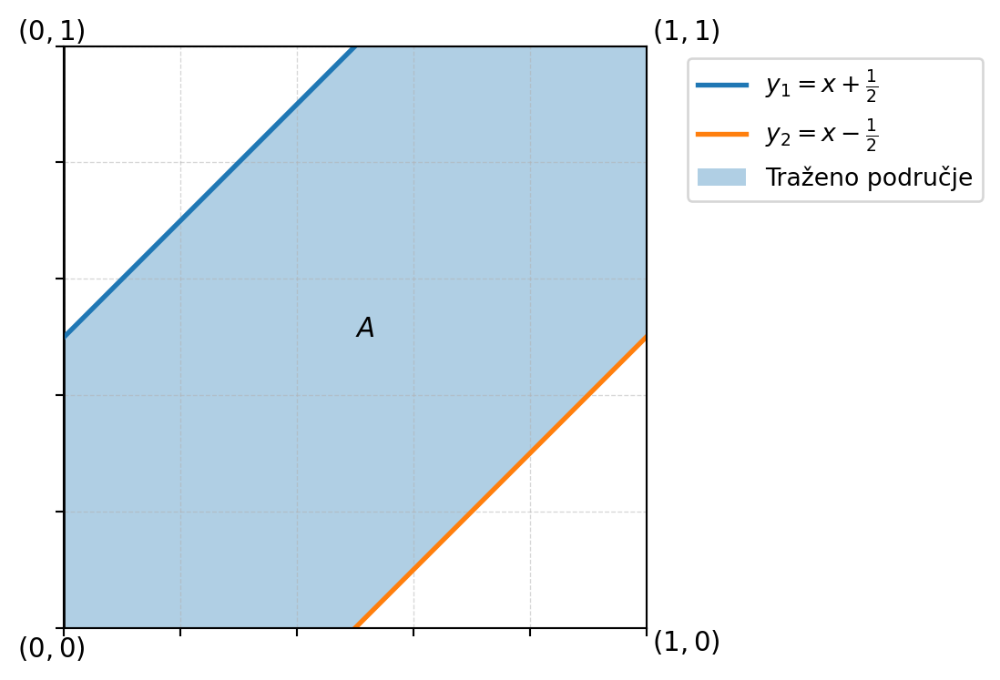

Prikaži Python kod
import numpy as np
import matplotlib.pyplot as plt
# Funkcije pravaca
def f(x):
return x + 1/2
def g(x):
return x - 1/2
# Vrijednosti x-a
x = np.linspace(0, 1, 500)
fig, ax = plt.subplots(figsize=(6, 6))
# Kvadrat I = [0,1]^2
ax.set_xlim(0, 1)
ax.set_ylim(0, 1)
# Osi
ax.axhline(0, color='black', linewidth=1)
ax.axvline(0, color='black', linewidth=1)
# Strelice na osima
ax.annotate('', xy=(1.03, 0), xytext=(0, 0),
arrowprops=dict(arrowstyle='->',
linewidth=1.2, color='black'))
ax.annotate('', xy=(0, 1.03), xytext=(0, 0),
arrowprops=dict(arrowstyle='->',
linewidth=1.2, color='black'))
# Pravac y1 = x + 1/2
ax.plot(x, f(x), label=r'$y_1=x+\frac{1}{2}$',
linewidth=2)
# Pravac y2 = x - 1/2
ax.plot(x, g(x), label=r'$y_2=x-\frac{1}{2}$',
linewidth=2)
# Područje između pravaca unutar kvadrata
# Donja granica: max(0, x - 1/2)
# Gornja granica: min(1, x + 1/2)
x_fill = np.linspace(0, 1, 500)
donja = np.maximum(0, x_fill - 1/2)
gornja = np.minimum(1, x_fill + 1/2)
ax.fill_between(
x_fill,
donja,
gornja,
alpha=0.35,
label='Traženo područje'
)
# Oznake vrhova kvadrata
ax.text(-0.08, -0.05, r'$(0,0)$', fontsize=11)
ax.text(1.01, -0.04, r'$(1,0)$', fontsize=11)
ax.text(-0.08, 1.01, r'$(0,1)$', fontsize=11)
ax.text(1.01, 1.01, r'$(1,1)$', fontsize=11)
ax.text(0.5,0.5, r'$A$', fontsize = 11)
# Mreža
ax.grid(True, linestyle="--", linewidth=0.5, alpha=0.5)
# Uklanjanje oznaka na osima
ax.tick_params(labelbottom=False, labelleft=False)
# Legenda izvan grafa, desno
ax.legend(
loc='upper left',
bbox_to_anchor=(1.05, 1),
frameon=True
)
# Podesi prostor kako legenda ne bi bila odrezana
plt.tight_layout()
# Omjer osi
ax.set_aspect('equal')
plt.show()